Para la realización de esta práctica, vamos a mitigar los ataques de denegación de servicio (DoS) utilizando Fail2Ban, para ello, necesitaremos de una máquina Ubuntu Server con Apache sobre la que crear el laboratorio.
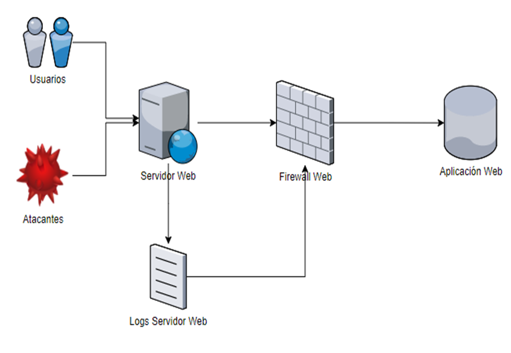
Primero de todo deberemos instalar Fail2ban.
$ sudo apt install fail2ban
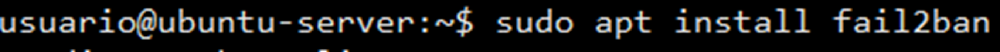
Una vez instalado, creará los archivos de configuración en la ruta /etc/fail2ban
En esta carpeta deberemos crear ciertos archivos, el primero, jail.conf
$sudo nano /etc/fail2ban/jail.local
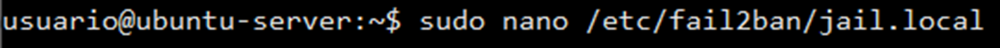
En este archivo añadiremos las siguientes líneas:
[http-get-dos]
enabled = true
port = http,https
filter = http-get-dos
logpath = /var/log/apache*/*access.log
maxretry = 300
findtime = 5m
bantime = 10m
action = iptables[name=HTTP, port=http, protocol=tcp]
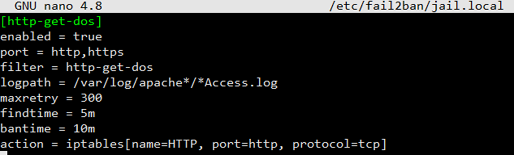
Enabled es donde indicamos que la regla esté activada.
Port definiremos el tipo de puertos a los que afectará, en nuestro caso aquellos puertos que usen tráfico http o https.
Filter indicamos el filtro que se utilizará para detectar las peticiones incorrectas.
Logpath definiremos el archivo de logs que se observará y filtrará por peticiones.
bantime es el tiempo que un host será bloqueado del servidor en caso de baneo. En este caso 10 minutos.
maxretry es el número de intentos fallidos realizados por una IP para que sea baneada. En este caso 5 intentos.
findtime es el tiempo en el que deben ocurrir las peticiones especificadas en maxretry para que la IP sea baneada. En este caso 5 minutos.
action son las acciones que se van a realizar una vez se cumplan el resto de las pautas. En este caso, se bloqueará el acceso a la IP por iptables.
Ahora deberemos crear el archivo al que hace referencia el filtro que acabamos de crear.
Los filtros se encuentran en la siguiente ruta /etc/fail2ban/filter.d/
Procedemos a crear un nuevo filtro:
$ sudo nano /etc/fail2ban/filter.d/http-get-dos.conf
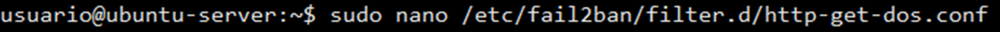
Y agregamos las siguientes líneas.
[Definition]
failregex = ^<HOST> -.*”(GET|POST).*
Con la opción failregex filtraremos todas las peticiones GET y POST que se realicen, es decir, las contabilizaremos todas.
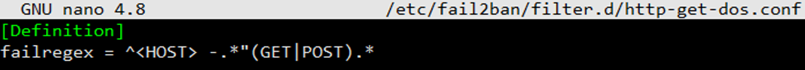
Una vez guardado el archivo, reiniciaremos fail2ban:
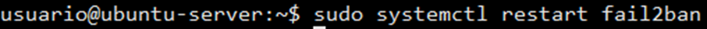
Con todo esto, ya dispondremos de nuestro servicio web protegido.
Ahora, vamos a testearlo, la mejor manera es utilizar apache benchmark.
Para ello, desde otra máquina a Linux (donde tengamos instalado el paquete apache2-utils) escribimos el siguiente comando, el cual, realizará 500 peticiones desde 10 conexiones distintas:
$ ab -n 500 -c 10 http://IP_del_fail2ban:80/
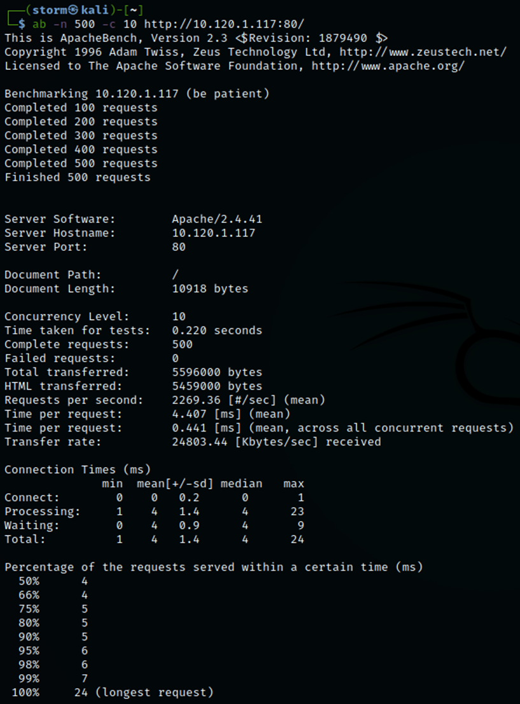
Ahora, podríamos comprobar desde los logs de nuestro fail2ban, encontrados en /var/log/fail2ban.log que la IP desde la que hemos hecho las pruebas ha sido baneada, impidiendo de esta forma los ataques.
$ cat /var/log/fail2ban.log
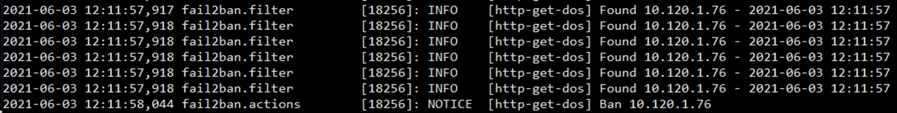
Podemos comprobar también la regla configurada en iptables con el siguiente comando, donde veremos que la IP ha sido bloqueada.
$ sudo iptables -L
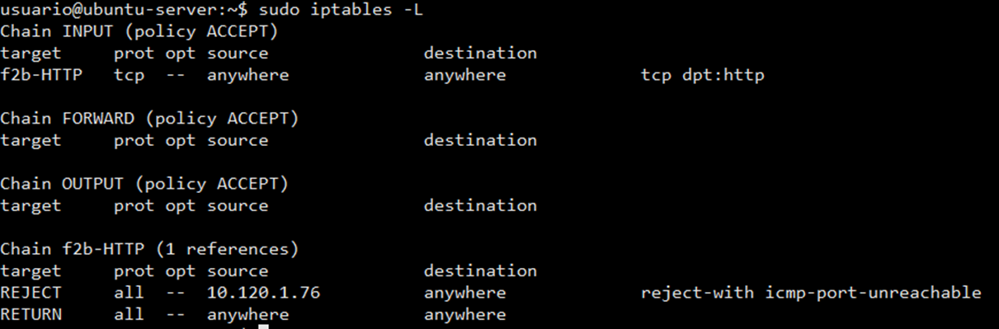
Si por alguna razón, nuestro fail2ban ha detectado un falso positivo y banea una dirección IP legítima, podemos desbanearlas.
Para ello, usamos el siguiente comando:
$ sudo fail2ban-client unban IP-de-maquina-atacante
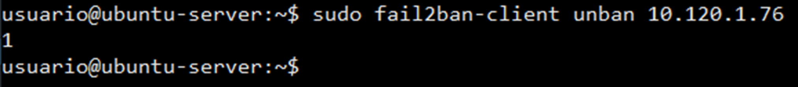
Comprobamos que la acción se ha efectuado con éxito:
$ cat /var/log/fail2ban.log
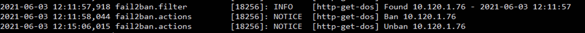
Si volvemos a mirar la configuración de iptables podremos observar que la regla anterior ya no existe:
$ sudo iptables -L
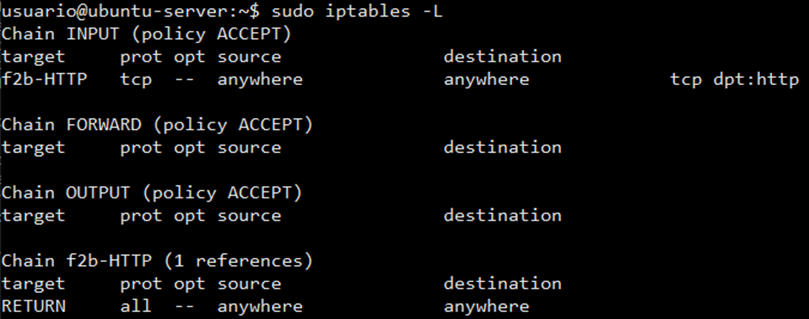